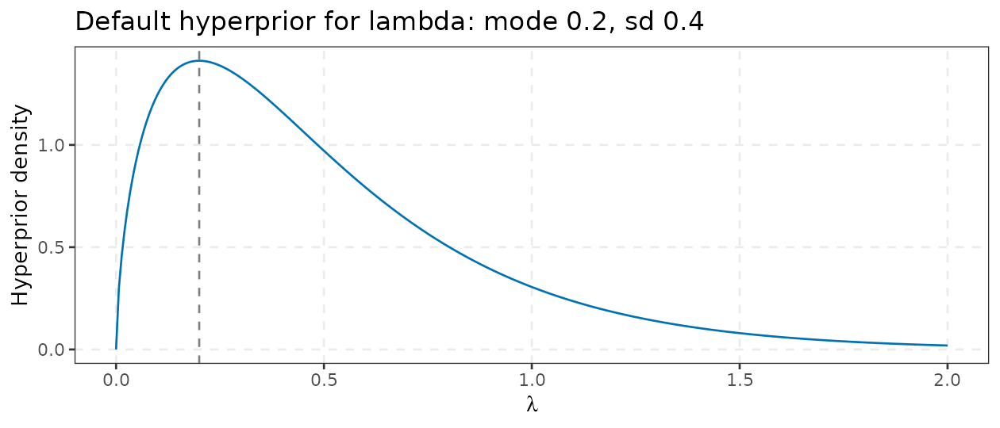
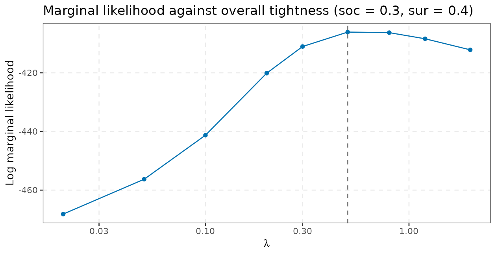
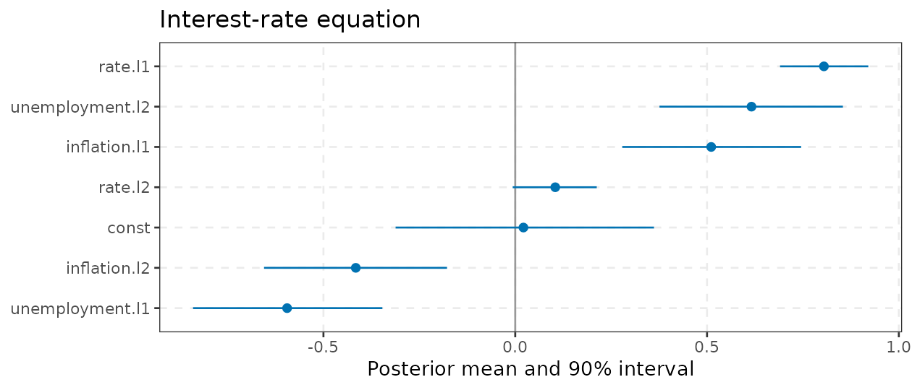
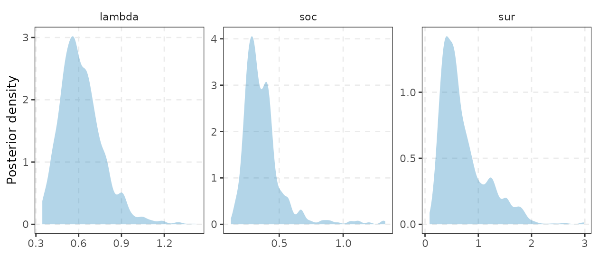
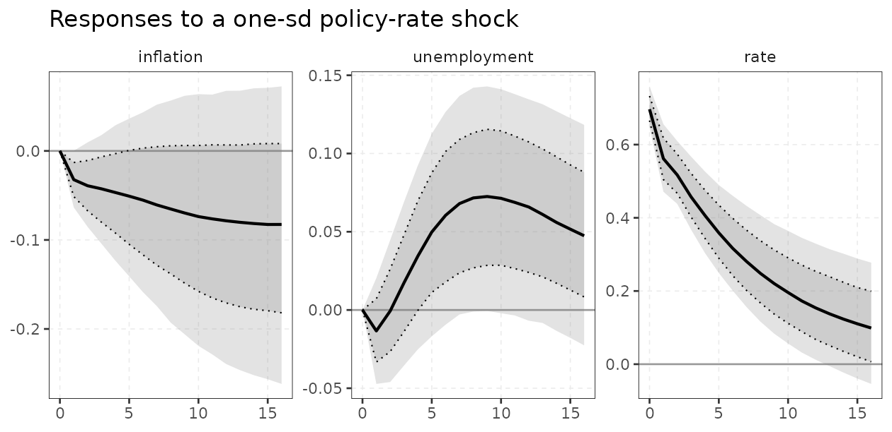
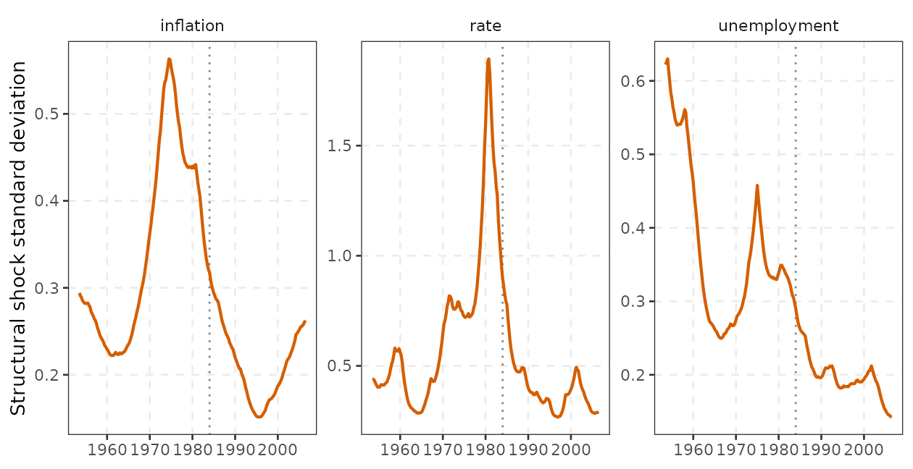
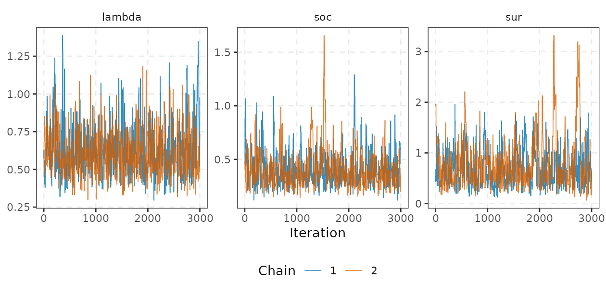
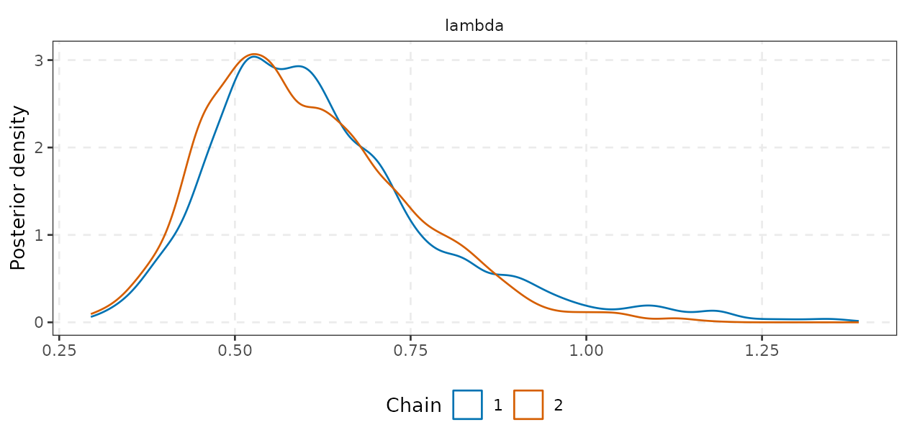
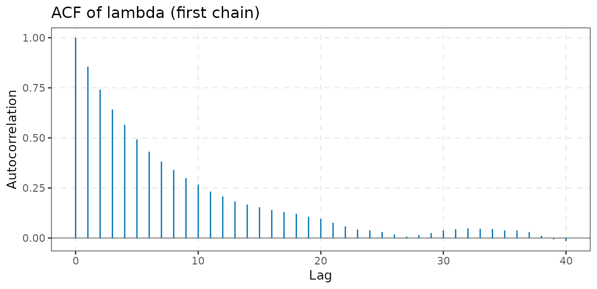
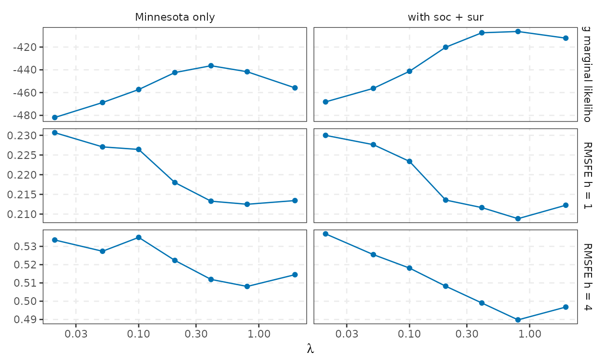

bvarm() fits Bayesian VARs with two families of
samplers, selected by the prior argument:
prior = |
model | sampler | cost |
|---|---|---|---|
prior_minnesota() |
conjugate Normal-inverse-Wishart (NIW), Minnesota + sum-of-coefficients + single-unit-root | exact draws (fixed hyperparameters) or Metropolis for hyperparameters, then direct draws | tiny |
prior_triangular() |
triangular, equation-by-equation; Minnesota, SSVS or horseshoe; optional stochastic volatility | Gibbs | linear in per sweep (in the number of equations; each equation costs ) |
Both return a bvarm object whose $draws is
a varm_draws container, the same one produced by the
bootstrap, so irf(), fevd(),
hd(), forecast() and every identification
scheme work unchanged (see vignette("identification")).
Time-varying coefficients are a third model class with its own
function, tvpvar(), described in
vignette("tvp-var").
This vignette is organised as: Bayes’ theorem for VARs (1), the
conjugate NIW posterior and its derivation (2), the Minnesota prior in
the exact parametrisation of the code (3), dummy-observation priors (4),
the marginal likelihood and the hierarchical Metropolis sampler (5), the
triangular sampler (6), shrinkage priors (7), stochastic volatility (8),
convergence diagnostics (9), a prior-sensitivity exercise (10), speed
(11) and a comparison with the BVAR package (12).
1. Bayes’ theorem for VARs
Let be the sample and the VAR parameters, with the first observations treated as fixed initial conditions. The VAR is , , with , so that Bayes’ theorem combines this with a prior that depends on hyperparameters (tightness, etc.): Three consequences organise everything below.
-
Everything is a function of draws. Impulse
responses, variance decompositions and forecasts are functions
;
their posterior is the push-forward of the posterior draws of
.
This is why every sampler in
varmonly has to return(B, Sigma)draws (avarm_drawsobject):irf()maps each draw through the identification scheme and reports percentiles. Forecasts integrate over parameter uncertainty too: , which is whatforecast()simulates (one future path per posterior draw). - The prior is a bias-variance device. An unrestricted VAR has coefficients (21 for the three-variable system with , 1620 for , ) estimated from numbers. The prior shrinks them towards a parsimonious benchmark; the amount of shrinkage is the hyperparameter .
- The marginal likelihood is the evidence for . It is the product of one-step-ahead predictive densities, , so a prior that maximises it is the one that forecast best, on average, in-sample and out of the information set at each date (the prior is updated recursively). It is automatically penalised for flexibility, with no need for a cross-validation loop. Giannone, Lenza and Primiceri (2015) turn this into a hierarchical model by putting a hyperprior on (section 5).
2. The conjugate NIW posterior
Write the VAR as , with , (, deterministic terms), rows i.i.d. (here counts the effective sample, after the initial observations). With the conjugate prior the posterior is of the same family:
Derivation. Up to constants, with , where the first factor is the likelihood, the second the Normal prior (the comes from the Kronecker covariance ) and the third the inverse-Wishart prior. The two quadratic forms in combine by completing the square (the matrix analogue of the ridge identity): with and . The first term is a Normal kernel in with covariance . What remains, , is an kernel once the is absorbed by the Normal integral (it is exactly the normalising constant of the Normal conditional). So the posterior is NIW, and the marginal posterior of is matrix- with (where the last two exist because ). is a matrix-ridge estimator: OLS shrunk towards the prior mean with weights given by the ratio of the data information to the prior precision .
Sampling. Direct, with no MCMC and no burn-in: draw
through the Bartlett decomposition of the Wishart
,
then
with
a
matrix of standard normals (this is niw_draw() in
src/bvar_niw.cpp). Draws for fixed hyperparameters
are therefore independent. The code below verifies the formulas against
bvarm() for a Minnesota prior without dummy
observations.
psi <- c(0.10, 0.12, 0.67) # fixed IW scale, one per variable
pr0 <- prior_minnesota(lambda = 0.2, alpha = 2, soc = NULL, sur = NULL, psi = psi, hyper = character(0))
f0 <- bvarm(y, p = 2, prior = pr0, ndraw = 20000)
p <- 2; M <- 3
Z <- embed(y, p + 1); Yd <- Z[, 1:M]; X <- cbind(Z[, -(1:M)], const = 1)
om <- c(rep(0.2^2 / (1:p)^2, each = M) / rep(psi, p), 1e7) # prior variance of coef of lag l, variable j: lambda^2 / (l^alpha psi_j)
b0 <- matrix(0, ncol(X), M); diag(b0[1:M, ]) <- 1 # random-walk prior mean (delta = 1)
Obar <- solve(crossprod(X) + diag(1 / om))
Bbar <- Obar %*% (crossprod(X, Yd) + diag(1 / om) %*% b0)
S <- diag(psi) + crossprod(Yd - X %*% Bbar) + t(Bbar - b0) %*% diag(1 / om) %*% (Bbar - b0)
max(abs(coef(f0) - Bbar)) # posterior mean of B: Monte Carlo error only
#> [1] 0.0007741886
max(abs(summary(f0)$Sigma - S / (nrow(X) + 1))) # E[Sigma|Y] = S/(nu - M - 1), nu = T + M + 2
#> [1] 0.0002869025The prior as extra data. Because and have the form of a regression on stacked data, any prior with diagonal is equivalent to dummy observations with and : the posterior mean is OLS on on . For example , (the constant gets a negligible row, as its prior variance is ). Check:
Xd <- diag(1 / sqrt(om)); Yd0 <- Xd %*% b0
Xa <- rbind(Xd, X); Ya <- rbind(Yd0, Yd)
max(abs(solve(crossprod(Xa), crossprod(Xa, Ya)) - Bbar)) # OLS on the augmented sample = posterior mean
#> [1] 1.312067e-13This is the way the Minnesota prior was originally implemented
(Litterman, 1986; Doan, Litterman and Sims, 1984) and the way
varm implements the sum-of-coefficients and
single-unit-root priors (section 4). It also gives the economics: a
prior is a statement about what the economy would have looked like in a
hypothetical earlier sample.
3. The Minnesota prior in the code’s parametrisation
In prior_minnesota() the prior is the Giannone, Lenza
and Primiceri (2015) (GLP) prior, with
variables,
regressors,
and:
-
Prior mean
():
zero except
for the first own lag (
delta = 1: random walk, for levels;delta = 0: white noise, for growth rates). - Prior covariance , with, for the coefficient on lag of variable (regressor index ) and for deterministic terms,
-
Inverse-Wishart scale
with
,
so that
.
By default
is the residual variance of an
AR()
for variable
(
NULLinprior_minnesota(psi = ); variance units, not standard deviations; see the comparison withBVARin section 12).
Because , the prior variance of the coefficient on lag of variable in equation is with . Read this as: the coefficient on a lag of variable is allowed to be times the ratio of residual standard deviations (this makes the prior invariant to the units of each variable), and the prior sd falls like with the lag (with the default , like ). Equivalently, for the block the dummy-observation form (Bańbura, Giannone and Reichlin, 2010) is and the inverse-Wishart prior itself can be written as more dummy observations with zero regressors.
Hyperpriors. Each hyperparameter
(,
and
)
is specified as c(mode, sd, min, max): a gamma density with
that mode and standard deviation, truncated to [min, max]
(for
,
an inverse-gamma with shape and scale
,
as in GLP, truncated to
).
Writing
,
the shape is
and the scale
,
which has the stated mode,
:
gam <- function(mode, sd) { r <- mode^2 / sd^2; k <- (2 + r + sqrt((4 + r) * r)) / 2; c(shape = k, scale = sqrt(sd^2 / k)) }
g_l <- gam(0.2, 0.4) # default for lambda
c(g_l, mode = unname((g_l[1] - 1) * g_l[2]), sd = unname(sqrt(g_l[1]) * g_l[2]))
#> shape scale mode sd
#> 1.6403882 0.3123106 0.2000000 0.4000000
ggplot() +
geom_function(fun = dgamma, args = list(shape = g_l[[1]], scale = g_l[[2]]), n = 300,
colour = varm_palette(1)) +
geom_vline(xintercept = 0.2, linetype = 2, colour = "grey50") +
xlim(0, 2) +
labs(x = expression(lambda), y = "Hyperprior density",
title = "Default hyperprior for lambda: mode 0.2, sd 0.4") +
theme_varm()
The default is deliberately loose (sd twice the mode): it says
“tight, but I am open to being wrong by a lot”. Defaults of the
dummy-observation hyperpriors are c(1, 1, 1e-4, 50) (mode
1, sd 1).
Economic intuition / how to use it
is the prior standard deviation of the first-lag coefficient on
other variables, in units of the ratio of residual standard
deviations. In words: with
every variable is a random walk (prior mean
)
and the data are ignored;
is OLS. A value around
says “I believe each variable is mostly a random walk with small
spillovers, and spillovers die out like
”.
Large
(say 1) is what macro data with a few variables usually prefer in the
hierarchical estimate below: with
variables, an unrestricted VAR(2) has 21 coefficients for 213
observations each, so little shrinkage is needed. Use
delta = 0 for series in growth rates (prior mean white
noise, not random walk), since a random-walk prior mean on a stationary
series pulls the first lag the wrong way.
ols <- coef(varm(y, p = 2))
lams <- c(0.01, 0.1, 0.2, 1, 10)
fits <- lapply(lams, function(l)
bvarm(y, 2, prior_minnesota(lambda = l, soc = NULL, sur = NULL, hyper = character(0)), ndraw = 500))
res <- sapply(fits, function(f) c(own = coef(f)["rate.l1", "rate"], cross = coef(f)["inflation.l1", "rate"]))
colnames(res) <- paste0("lambda=", lams)
round(cbind(res, OLS = c(own = ols["rate.l1", "rate"], cross = ols["inflation.l1", "rate"])), 3)
#> lambda=0.01 lambda=0.1 lambda=0.2 lambda=1 lambda=10 OLS
#> own 0.991 0.920 0.872 0.791 0.774 0.777
#> cross 0.010 0.218 0.375 0.525 0.543 0.546The first row is the own first lag in the interest-rate equation, the second the coefficient on lagged inflation: as grows the former moves from 1 (the prior mean) to the OLS value, and the latter from 0 to OLS.
4. Sum-of-coefficients and single-unit-root dummy observations
Two further dummy-observation priors, with
the mean of the first
rows of the regression sample, $\bar
y=\frac1p\sum_{t=1}^p y_t^{\rm reg}$ (the code uses the first
rows of the effective sample, that is, data points
of the raw data; the BVAR package gives the same marginal
likelihood, see section 12), encode beliefs about persistence and
cointegration:
-
Sum of coefficients (Doan, Litterman and Sims,
1984), tightness
(
soc): rows , . It says that if the average of the lags of all variables is constant, the variable stays at that level: a prior for unit roots in each variable and for no cointegration. is a VAR in differences. -
Single unit root / dummy initial observation (Sims,
1993), tightness
(
sur): one row , . It says that the initial level is a good forecast of every variable: it allows cointegration, with a common stochastic trend, and shrinks towards it. It needs a constant (it is ignored ifconst = FALSE).
Pass soc = NULL/sur = NULL to drop either.
In the sampler the dummy rows are appended to
and the posterior is computed on the augmented sample; the marginal
likelihood of the real data divides out that of the dummies alone (next
section).
Economic intuition / how to use it
Unit-root priors help with macro data in levels at long horizons: the
OLS VAR is biased towards stationarity (for persistent series the sum of
the AR coefficients is biased below one), so its forecasts mean-revert
too fast, and Minnesota shrinkage alone does not correct that because it
shrinks each coefficient separately, not their sum. They are
least useful for variables in growth rates. The two priors are
alternatives about the long run: soc says “no
cointegration”, sur says “cointegration or stationarity
around a common level is fine”. Whether the data want them can be read
from the marginal likelihood (next section).
5. Marginal likelihood and the hierarchical sampler
Given the NIW prior, the marginal likelihood of
is available in closed form (a ratio of normalising constants; evaluate
at any point and the
-dependence
cancels). With
,
with
and
.
The code evaluates the two log-determinants through eigenvalues of
and of
(so that
),
at cost
per evaluation. When dummy observations are present, the likelihood of
the real data is obtained, as in Giannone et al. (2015), by
dividing the marginal likelihood of the augmented sample by that of the
dummies alone. The result is returned as $logml. Note that
for a hierarchical fit $logml is evaluated at the
posterior mode of the hyperparameters (without the hyperprior),
not integrated over them: it is a profile quantity, comparable across
fits that estimate the same hyperparameters on the same sample.
grid <- c(0.02, 0.05, 0.1, 0.2, 0.3, 0.5, 0.8, 1.2, 2)
lml <- sapply(grid, function(l) bvarm(y, 2, prior_minnesota(lambda = l, soc = 0.3, sur = 0.4, hyper = character(0)),
ndraw = 10)$logml)
ggplot(data.frame(lambda = grid, logml = lml), aes(lambda, logml)) +
geom_vline(xintercept = grid[which.max(lml)], linetype = 2, colour = "grey50") +
geom_line(colour = varm_palette(1)) +
geom_point(colour = varm_palette(1)) +
scale_x_log10() +
labs(x = expression(lambda), y = "Log marginal likelihood",
title = "Marginal likelihood against overall tightness (soc = 0.3, sur = 0.4)") +
theme_varm()
The hierarchical Metropolis sampler
Following GLP, the hyperparameters in hyper (default
c("lambda", "soc", "sur"); "full" adds
alpha and psi) get the hyperpriors of section
3 and are estimated by
and then
is drawn directly from the NIW posterior at each retained
,
so that
is an exact draw from the joint posterior when the
chain is. Steps in cpp_niw_hier():
-
Mode.
optim()(L-BFGS-B, with the boundsmin/max) maximises over the free hyperparameters and returns the numerical Hessian at the mode. -
Proposal. Random-walk Metropolis with Gaussian
steps
,
,
with covariance
(the Laplace approximation to the posterior covariance; if
is not invertible or not positive definite the code falls back to a
diagonal
).
The chain starts at the mode. Proposals outside
[min, max]have zero density and are rejected. - Acceptance. Accept with probability : each evaluation is one closed-form marginal likelihood plus the hyperprior densities. At an accepted point the NIW posterior moments are refreshed.
-
Scale adaptation.
starts at
scale = 0.5. Ifadapt = TRUE, in every block of 50 burn-in iterations is multiplied by if the block acceptance rate is below and by if it is above . The scale is frozen after burn-in, so the retained chain is a standard (non-adaptive) Metropolis chain with a valid stationary distribution.$acceptis the acceptance rate over the retained draws. - Direct draw. At every retained , one draw from the NIW posterior (section 2).
For a Gaussian target the optimal random-walk scale is about
times the target covariance factor, with an acceptance rate of 0.44 for
falling to 0.234 as
;
the 25-45% window brackets both. The efficiency of the sampler is
measured by the effective sample size (ESS): for
retained draws with autocorrelations
,
the number of independent draws with
the same Monte Carlo variance for the posterior mean. Section 9 reports
it with mcmc_diagnostics().
fit <- bvarm(y, p = 2, ndraw = 2000, nburn = 1000)
fit
#> <bvarm> niw-minnesota BVAR(2), K = 3, 2000 posterior draws
#> log marginal likelihood: -405.92827
#> hyperparameters (posterior mean [5%, 95%]); MH acceptance 0.32
#> mean 5% 95%
#> lambda 0.6192 0.4145 0.9035
#> soc 0.3702 0.2060 0.6621
#> sur 0.7128 0.2576 1.5915
#>
#> posterior mean of B:
#> inflation unemployment rate
#> inflation.l1 1.5225 0.0192 0.5109
#> unemployment.l1 -0.2558 1.3317 -0.5947
#> rate.l1 -0.0456 -0.0191 0.8047
#> inflation.l2 -0.5275 0.0033 -0.4157
#> unemployment.l2 0.2183 -0.4075 0.6159
#> rate.l2 0.0457 0.0412 0.1043
#> const 0.2363 0.2475 0.0214
glance(fit) # logml (at the hyperparameter mode), accept (Metropolis rate), posterior-mean hyperparameters
#> # A tibble: 1 × 10
#> K p nobs ndraw method logml accept lambda soc sur
#> <int> <int> <int> <int> <chr> <dbl> <dbl> <dbl> <dbl> <dbl>
#> 1 3 2 213 2000 niw-minnesota -406. 0.32 0.619 0.370 0.713tidy() returns the posterior of every coefficient as a
tibble (mean, sd and equal-tailed 90% interval), which is all you need
to build your own plots; autoplot(fit) draws the same
intervals, and autoplot(fit, "hyper") the posterior
densities of the hyperparameters. For example, the coefficients of the
interest-rate equation:
tidy(fit) |>
subset(response == "rate") |>
ggplot(aes(estimate, reorder(term, estimate))) +
geom_vline(xintercept = 0, colour = "grey60") +
geom_pointrange(aes(xmin = conf.low, xmax = conf.high), colour = varm_palette(1), size = 0.3) +
labs(x = "Posterior mean and 90% interval", y = NULL, title = "Interest-rate equation") +
theme_varm()
autoplot(fit, "hyper")
Which prior does the data prefer? The marginal likelihood compares priors for the same data and the same (it is not comparable across : each drops a different number of initial observations, so the data being explained differ).
Maximising over a grid of (with , when included):
cfg <- list(`Minnesota only` = list(soc = NULL, sur = NULL),
`+ sum-of-coefs` = list(soc = 0.3, sur = NULL),
`+ single unit root` = list(soc = NULL, sur = 0.4),
`both` = list(soc = 0.3, sur = 0.4))
# best log marginal likelihood over a lambda grid, hyperparameters otherwise fixed
ml <- sapply(cfg, function(a) max(sapply(grid, function(l)
bvarm(y, 2, do.call(prior_minnesota, c(list(lambda = l, hyper = character(0)), a)), ndraw = 10)$logml)))
round(ml, 1)
#> Minnesota only + sum-of-coefs + single unit root both
#> -437.2 -429.3 -413.8 -406.1Both dummy-observation priors raise the marginal likelihood, and the size of the gain is the evidence for them: the interest rate and unemployment are highly persistent and the sample has few effective turning points. Since the marginal likelihood is a one-step-ahead predictive density summed over the sample (the “Bayesian forecast-based” interpretation), a large gain for a prior means it forecasts better on average over the sample, not that it is true.
Posterior summaries, IRFs and forecasts
s <- summary(fit)
round(s$mean[1:3, ], 3) # posterior means of the first-lag matrix
#> inflation unemployment rate
#> inflation.l1 1.523 0.019 0.511
#> unemployment.l1 -0.256 1.332 -0.595
#> rate.l1 -0.046 -0.019 0.805
max(stability(fit)) # largest eigenvalue modulus across draws
#> [1] 1.014554
ir <- irf(fit, id = id_chol(), horizon = 16)
ir
#> <varm IRF> K = 3, horizon 0..16, id = chol, bands: 68%/90%
The bands are posterior credible intervals (percentiles of
the draws), not confidence intervals. Compare with the bootstrap bands
of the OLS VAR in vignette("var-theory"): the Bayesian
responses to the policy shock decay more slowly and the bands are
tighter because the prior shrinks the persistence parameters towards
one.
6. The triangular sampler and why its equations decouple
The conjugate prior ties the prior covariance of the coefficients in
every equation to
(the Kronecker structure
),
which forces a cross-equation structure (and a symmetric treatment of
variables) and rules out stochastic volatility and equation-specific
shrinkage. The alternative (Cogley and Sargent, 2005; Carriero, Clark
and Marcellino, 2019; the prior_triangular() family)
orthogonalises the system:
with
unit lower triangular
(,
,
free),
and
the
matrix with column
().
The reduced form is
and
(code: Pi %*% t(Ainv)). These draws are stored as
reduced-form
pairs (with
,
the last-period covariance, when there is SV) and mapped through the
same identification code.
Why equations decouple. Row of reads a regression of on with coefficient . Since the Jacobian of is one and the likelihood factorises: Factor depends only on . All three priors below are independent across equations, so given the volatilities the posterior is a product: with the prior mean ( for the own first lag, zero elsewhere) and the prior variances. One sweep draws each , then updates its shrinkage state and volatility given the new residual . Cost. Equation needs one Cholesky of order (plus a Gram matrix: with SV, where the weights differ across equations, and precomputed for constant variances), so a sweep costs , against for a joint draw of all coefficients: the equation-by-equation scheme saves a factor , which is the whole reason large VARs (Carriero et al., 2019) are feasible.
Prior variances. With the AR residual standard deviation, the base variance of the coefficient on lag of variable in equation is , multiplied by
-
type = "minnesota": for own lags and for other variables (cross-variable shrinkage); fixed, no hyperparameter estimation; -
type = "ssvs": slab/spike mixture (section 7); -
type = "horseshoe": global-local scales (section 7).
The contemporaneous coefficients
get prior variance
(prior mean zero) and the constants
.
Without SV, the equation variance is
,
hom = c(a0, b0) = c(3, 2), updated as
.
Unlike the NIW case the prior is on the structural
coefficients: it is not scaled by
(the
factor takes care of units).
fm <- bvarm(y, p = 4, prior = prior_triangular("minnesota"), ndraw = 1000, nburn = 500)
fs <- bvarm(y, p = 4, prior = prior_triangular("ssvs"), ndraw = 1000, nburn = 500)
fh <- bvarm(y, p = 4, prior = prior_triangular("horseshoe"), ndraw = 1000, nburn = 500)
fm
#> <bvarm> triangular-minnesota BVAR(4), K = 3, 1000 posterior draws
#>
#> posterior mean of B:
#> inflation unemployment rate
#> inflation.l1 1.3288 0.0029 0.3312
#> unemployment.l1 -0.1372 1.1911 -0.4938
#> rate.l1 -0.0071 -0.0085 0.8002
#> inflation.l2 -0.2371 0.0061 -0.1515
#> unemployment.l2 0.0349 -0.2116 0.3167
#> rate.l2 0.0067 0.0128 -0.0028
#> inflation.l3 -0.0849 0.0054 -0.0219
#> unemployment.l3 0.0296 -0.0955 0.1123
#> rate.l3 0.0001 0.0175 0.0927
#> inflation.l4 -0.0152 0.0150 -0.0492
#> unemployment.l4 0.0254 0.0044 0.0593
#> rate.l4 -0.0020 0.0050 0.0147
#> const 0.3212 0.4085 0.1569Ordering caveat
The likelihood is invariant to the ordering of the variables (it is the same Gaussian VAR, with the Cholesky decomposition in some order). The prior is not: shrinkage on and on is shrinkage in a rotated system, and the implied prior on the reduced-form differs across orderings. (With stochastic volatility the model also changes, because allows the log-volatilities of the orthogonalised shocks, not of the variables, to move independently.) The conjugate NIW prior has no such problem, since it treats all equations symmetrically. The demonstration reverses the ordering of the variables (rate first) and compares posterior means of in units of the posterior standard deviation:
f1 <- bvarm(y, p = 4, prior = prior_triangular("minnesota"), ndraw = 1000, nburn = 500)
f2 <- bvarm(y[, 3:1], p = 4, prior = prior_triangular("minnesota"), ndraw = 1000, nburn = 500)
b1 <- coef(f1); b2 <- coef(f2)[rownames(b1), colnames(b1)]
z_tri <- abs(b1 - b2) / summary(f1)$sd # |difference| in posterior-sd units
# the same experiment with the conjugate prior: only Monte Carlo noise should remain
g1 <- bvarm(y, p = 4, prior = prior_minnesota(hyper = character(0)), ndraw = 4000)
g2 <- bvarm(y[, 3:1], p = 4, prior = prior_minnesota(hyper = character(0)), ndraw = 4000)
z_niw <- abs(coef(g1) - coef(g2)[rownames(b1), colnames(b1)]) / summary(g1)$sd
round(rbind(triangular = quantile(z_tri, c(0.5, 0.9, 1)), `NIW (conjugate)` = quantile(z_niw, c(0.5, 0.9, 1))), 2)
#> 50% 90% 100%
#> triangular 0.24 0.95 1.92
#> NIW (conjugate) 0.02 0.04 0.05
round((b1 - b2)[1:6, ], 2)
#> inflation unemployment rate
#> inflation.l1 0.01 -0.02 0.09
#> unemployment.l1 0.01 0.03 -0.22
#> rate.l1 -0.01 0.03 -0.06
#> inflation.l2 -0.01 0.01 -0.06
#> unemployment.l2 -0.01 -0.02 0.16
#> rate.l2 0.00 -0.02 0.01The top rows show the median, 90th percentile and maximum of : with the triangular prior the ordering moves coefficients by up to 1.9 posterior standard deviations (26% of coefficients move by more than half an sd), while for the NIW prior the same experiment gives 0.05 at most, i.e. only Monte Carlo noise. The posterior sd is large, so the differences are not alarming for any one coefficient, but they are not negligible either. Order the variables as in a recursive identification (slowest-moving first), which is also what the triangular sampler is naturally suited to, and check the sensitivity of whatever you report by reordering, as above.
7. SSVS and horseshoe: full conditionals as implemented
Both shrinkage priors act on the lag block of each equation (the first coefficients; constants and contemporaneous keep their fixed Normal priors). Let be the deviation from the prior mean and the base variance of section 6.
SSVS (George, Sun and Ni, 2008). Each coefficient
has a two-component prior
with rho
the spike-to-slab sd ratio (default 0.1) and inclusion
(default 0.5). Given
,
the indicators are independent Bernoulli:
and given
the coefficients are drawn from the Gaussian conditional of section 6
with prior variance
or
.
The reported $inclusion is the average of
over retained draws (posterior inclusion probability, PIP). A PIP near 0
means “the data are consistent with the spike”, not that the coefficient
is exactly zero.
Horseshoe (Carvalho, Polson and Scott, 2010) in the
Makalic and Schmidt (2016) inverse-gamma representation. With the
equation-specific global scale
and local scales
,
and the conditionals sampled in the
code are
where
has shape
and scale
.
The auxiliary variables
make the half-Cauchy priors on
conditionally conjugate. Note that (i) the prior is on the
equation’s coefficients, scaled by the Minnesota factor
(so lag decay and unit adjustment are kept), (ii) lambda1
and lambda2 have no role in the horseshoe other than
initialising
:
the global scale is learned, which is the point of the prior, and (iii)
the stored $tau is
per draw and equation.
inc <- fs$inclusion
dimnames(inc) <- list(rownames(coef(fs))[1:12], colnames(y))
round(inc[1:6, ], 2) # lags 1 and 2
#> inflation unemployment rate
#> inflation.l1 1.00 0.32 0.35
#> unemployment.l1 0.99 0.97 0.94
#> rate.l1 0.24 0.28 0.99
#> inflation.l2 1.00 0.34 0.48
#> unemployment.l2 0.68 0.97 0.62
#> rate.l2 0.34 0.38 0.40$inclusion holds the posterior probability that each lag
coefficient belongs to the slab. Rows are the regressors in the same
order as coef() (lag 1 of each variable, lag 2, …), columns
the equations. Coefficients that matter (typically the own first lags
and the persistence of unemployment and the interest rate) have
inclusion probabilities near 1; many cross-variable and higher-lag
coefficients end up near or below the prior value of 0.5, i.e. the data
do not support keeping them. Shrinkage priors earn their keep when the
lag length
or the number of variables
is large. Posterior mean coefficients across the three priors (equation
rate, second lag block):
round(cbind(minnesota = coef(fm)[5:7, "rate"], ssvs = coef(fs)[5:7, "rate"],
horseshoe = coef(fh)[5:7, "rate"]), 3)
#> minnesota ssvs horseshoe
#> unemployment.l2 0.317 0.336 0.479
#> rate.l2 -0.003 0.001 -0.009
#> inflation.l3 -0.022 -0.013 0.045
dim(fh$tau) # horseshoe global scale per equation, per draw
#> [1] 1000 3
round(colMeans(fh$tau), 3) # posterior mean of tau_i
#> [1] 0.221 0.195 0.204Economic intuition / how to use it
Why large VARs need shrinkage. The number of coefficients grows with while the sample grows with : a 20-variable VAR(4) on quarterly data has 1620 coefficients for 20 series of 200-250 observations each. OLS is not even defined when and is hugely noisy before. The Minnesota prior encodes a dense belief (everything is small, own lags matter most), SSVS a sparse one (a few coefficients matter, the rest are zero), the horseshoe a sparse-with-big-signals belief (heavy tails: noise is shrunk hard, large effects are barely shrunk). With three variables and 215 observations the three give similar answers, as the table above shows; the choice matters when (Bańbura et al., 2010; Carriero et al., 2019).
8. Stochastic volatility
With sv = TRUE each structural-equation log-variance
follows a random walk,
,
,
with initial value
and an
inverse-gamma
prior on
(sv_prior = c(a = 5, b = 0.04, V0 = 10)). Writing
with
the equation residual and
an offset that avoids
,
the model is linear in
with a non-Gaussian
error. Kim, Shephard and Chib (1998) approximated its density by a
seven-component Gaussian mixture; the code uses the refined
10-component mixture of Omori, Chib, Shephard and Nakajima
(2007),
(a table of the fixed
is in src/bvar_tri.cpp; the mixture mean is
).
One sweep for equation
:
- Mixture indicators. with .
- Volatility path (FFBS; Carter and Kohn, 1994; Frühwirth-Schnatter, 1994). Given the indicators the model is a Gaussian local-level state-space model, , , . The Kalman filter (initialised at ) gives the filtered moments ; the path is then drawn backward from and , which draws the whole path jointly (and too).
- Innovation variance. .
What the innovation-variance prior means
is the one-quarter standard deviation of the log-variance, so is the proportional change in the shock standard deviation per quarter. The prior has mean and:
q <- c(0.05, 0.5, 0.95)
sig_h <- sqrt(1 / qgamma(q, 5, 0.04)) # quantiles of sigma_h from the IG(5, 0.04) prior
Tn <- nrow(y) - 2
round(rbind(`sigma_h (log-variance sd per quarter)` = sig_h,
`sd of change in log shock-sd over the sample` = sig_h * sqrt(Tn) / 2), 2)
#> [,1] [,2] [,3]
#> sigma_h (log-variance sd per quarter) 0.14 0.09 0.07
#> sd of change in log shock-sd over the sample 1.04 0.68 0.48so the prior median says that the shock sd moves by about 4-5% a
quarter (4.6%) and typically by a factor of 2 (one sd) over the sample.
Two things to know. (i) The prior is informative: it puts
negligible mass below
,
so it pulls away from constant variance, but with
the likelihood about
is informative enough for volatility to be learned. Constant variance is
nested but sits at the edge of the prior. (ii) A larger
lets volatility move faster and makes estimated volatility noisier, a
smaller
makes it smoother and, in the limit, constant. If you doubt the
volatility paths, rerun with sv_prior = c(5, 0.01, 10) and
c(5, 0.16, 10). $sigma_h holds the draws of
(and store_h = TRUE the full paths).
t_sv <- system.time(fsv <- bvarm(y, p = 2, prior = prior_triangular("minnesota"), ndraw = 1000, nburn = 1000, sv = TRUE))
v <- volatility(fsv) # posterior-mean standard deviation of each structural shock
yrv <- yr[-(1:2)]
vol <- data.frame(year = rep(yrv, 3), variable = rep(colnames(y), each = length(yrv)), sd = as.vector(v))
ggplot(vol, aes(year, sd)) +
geom_vline(xintercept = 1984, linetype = 3, colour = "grey50") +
geom_line(colour = varm_palette(2)[2], linewidth = 0.8) +
facet_wrap(~variable, scales = "free_y") +
labs(x = NULL, y = "Structural shock standard deviation") +
theme_varm()
Economic intuition / how to use it
-
When SV matters. The Great Moderation after the
early 1980s lowered the volatility of the series (the dotted line marks
1984; the post-1984 average standard deviation of the structural shocks
is 38%, 47%, 40% lower for inflation, unemployment and the interest
rate). A constant-variance VAR averages two regimes: it overstates
uncertainty in the moderation and understates it before. Density
forecasts and the scale of IRFs change; the shape of
the IRFs (the dynamics) is unchanged here because
is constant. SV is therefore mainly a gain for predictive densities and
for correct structural scaling. If you suspect that the
propagation also changed (not only the size of shocks), you
need time-varying coefficients (
vignette("tvp-var")). - 2020. The Covid episode in 2020 has outliers hundreds of times larger than usual. A random-walk volatility absorbs them only slowly and leaves volatility elevated for years, so predictive intervals after 2020 are too wide for too long (Lenza and Primiceri, 2022). The sample here ends in 2006 and the current release has no outlier-robust (e.g. or outlier-mixture) variants: for 2020-21 data, drop or dummy the pandemic quarters, or treat results with caution.
-
IRFs under SV. The reduced-form covariance varies
in time.
irf()uses by defaultvol = "last", the covariance at the end of the sample (a low-volatility date here), whereasvol = "mean"uses with the average of over the sample (computed draw by draw): the size of the shock differs.
i_last <- irf(fsv, horizon = 12, vol = "last")
i_mean <- irf(fsv, horizon = 12, vol = "mean")
round(c(last = i_last$estimate["rate", "rate", 1], mean = i_mean$estimate["rate", "rate", 1]), 3)
#> last mean
#> 0.292 0.686Normalise with
normalise = list(shock = "rate", variable = "rate", size = 1)
to compare shapes across volatility dates.
Forecasting with SV
Forecasts from an SV fit simulate the log-volatility forward as a
random walk (cpp_forecast_sv()): for each posterior draw,
,
then
,
and the path is propagated with that draw’s
.
Two consequences: the intervals reflect the volatility at the end of
the sample (not its sample average), and they widen with the
horizon even when the VAR is stationary because volatility itself is
uncertain. Compare with the constant-variance triangular model (width of
the 68% predictive interval):
fcv <- bvarm(y, p = 2, prior = prior_triangular("minnesota"), ndraw = 1000, nburn = 1000)
width <- function(f) { fo <- forecast(f, h = 8, level = 0.68); fo$bands[, , "0.84"] - fo$bands[, , "0.16"] }
round(rbind(`constant variance` = width(fcv)[c(1, 4, 8), "rate"], `SV` = width(fsv)[c(1, 4, 8), "rate"]), 2)
#> [,1] [,2] [,3]
#> constant variance 1.49 2.94 3.60
#> SV 0.62 1.46 2.02(columns are for the interest rate.) The sample ends in a calm period, so the SV intervals are narrower than the constant-variance ones that average high- and low-volatility episodes. Neither is “right”: this is what the two models say, and it is why SV should be assessed through log predictive scores rather than point forecasts.
9. Convergence diagnostics with mcmc_diagnostics()
The conjugate sampler at fixed hyperparameters needs no diagnostics
(draws are i.i.d.). Everything else is MCMC.
mcmc_diagnostics() reports, for each parameter, the
posterior mean and sd, the effective sample size
(Geyer’s initial monotone positive sequence on the multi-chain
autocovariances, Vehtari et al. 2021), the split
(each chain is cut in two halves, so it works with one chain; values
above about 1.01 signal non-convergence) and the Geweke
z-score (first 10% against last 50% of each chain, with
variances inflated by the autocorrelation time;
suggests non-stationarity). Passing a bvarm gives the
hyperparameter draws if hierarchical and the coefficients otherwise; a
list of matrices (one per chain) gives multi-chain diagnostics.
set.seed(11); c1 <- bvarm(y, p = 2, ndraw = 3000, nburn = 1000)
set.seed(12); c2 <- bvarm(y, p = 2, ndraw = 3000, nburn = 1000)
c(accept1 = glance(c1)$accept, accept2 = glance(c2)$accept)
#> accept1 accept2
#> 0.3310000 0.3356667
mcmc_diagnostics(c1) # one chain, hyperparameters
#> term estimate std.error ess rhat geweke_z
#> lambda 0.628 0.167 202 1.00 0.563
#> soc 0.398 0.156 208 1.00 1.112
#> sur 0.695 0.347 160 1.01 -0.941
dg <- mcmc_diagnostics(list(c1$hyper, c2$hyper)) # two chains
dg
#> term estimate std.error ess rhat geweke_z
#> lambda 0.615 0.155 473 1.01 1.686
#> soc 0.402 0.167 246 1.00 1.130
#> sur 0.730 0.433 168 1.02 -0.846An honest look at the hierarchical hyperparameters
The
draws are exact given
,
but the
chain is a random-walk Metropolis sampler and mixes slowly. In this run
the acceptance rates (0.33 and 0.34) are inside the target window, yet
the effective sample size of the retained hyperparameters is only about
168-473 out of 6000 draws, that is 2.8-7.9%. Reasons: a plain random
walk on
hyperparameters makes small, correlated moves (a 30-40% acceptance rate
means most accepted steps are a fraction of a posterior standard
deviation), and the posterior of
(sur) is wide and right-skewed. The Hessian-based proposal
is not the culprit here: the posterior correlations among the three
hyperparameters are weak (largest absolute correlation 0.13), so slow
mixing is simply the price of a random-walk sampler with only a few
thousand draws. Practical consequences:
- the posterior means of
,
and
are accurate to a few percent with a few thousand draws, but their
tail quantiles (the 5% and 95% in
print(fit)) need far more: takendrawof 20000 or more when you need credible intervals for hyperparameters (the whole run costs about one second for ); - the IRFs and forecasts average over the hyperparameters, so they inherit the autocorrelation of but their Monte Carlo error is usually small relative to the posterior spread;
- always compare two chains (
R-hat) and look at the traces:
autoplot(dg, "trace") # two chains, one panel per hyperparameter
autoplot(dg, "density", params = lambda) # `params` takes tidyselect, like every variable argument
ac <- acf(c1$hyper[, "lambda"], lag.max = 40, plot = FALSE)
ggplot(data.frame(lag = drop(ac$lag), acf = drop(ac$acf)), aes(lag, acf)) +
geom_hline(yintercept = 0, colour = "grey60") +
geom_segment(aes(xend = lag, yend = 0), colour = varm_palette(1)) +
labs(x = "Lag", y = "Autocorrelation", title = "ACF of lambda (first chain)") +
theme_varm()
Mixing improves if the hyperparameter dimension is reduced (e.g.
hyper = "lambda") and degrades with
hyper = "full" (which adds
and the
scales
):
see for yourself with
mcmc_diagnostics(bvarm(y, 2, prior_minnesota(hyper = "full"), ndraw = 5000)).
For the triangular sampler, thin reduces storage but not
the work. The sampler has no hyperparameters in the Minnesota case, but
the coefficient draws are autocorrelated, and the SV and shrinkage
hyperparameters
(,
)
are the slowest mixing, so use a longer nburn for them.
Diagnostics on the coefficients (stored in $draws$B) and on
with two chains:
bmat <- function(f) { B <- f$draws$B; m <- t(matrix(B, dim(B)[1] * dim(B)[2]))
colnames(m) <- as.vector(outer(rownames(B), colnames(B), paste, sep = ":")); m }
ch <- lapply(1:2, function(k) {
set.seed(20 + k)
f <- bvarm(y, p = 2, prior = prior_triangular("minnesota"), ndraw = 1500, nburn = 1000, sv = TRUE)
list(B = bmat(f), sh = `colnames<-`(f$sigma_h, paste0("sigma_h.", colnames(y))))
})
dB <- mcmc_diagnostics(lapply(ch, `[[`, "B"))
round(c(min_ess = min(dB$ess), median_ess = median(dB$ess), max_rhat = max(dB$rhat)), 2) # 21 coefficients
#> min_ess median_ess max_rhat
#> 1085.18 1751.92 1.00
mcmc_diagnostics(lapply(ch, `[[`, "sh"))
#> term estimate std.error ess rhat geweke_z
#> sigma_h.inflation 0.132 0.0244 76.9 1.03 -1.236
#> sigma_h.unemployment 0.141 0.0356 66.7 1.01 -0.155
#> sigma_h.rate 0.242 0.0533 68.2 1.02 -0.278The VAR coefficients mix well (they are drawn jointly, given the volatilities); mixes much more slowly and has the lowest ESS. If you use SV for inference on volatility, run 10000+ sweeps and check for .
10. Prior sensitivity: marginal likelihood against forecast accuracy
How much does the overall tightness matter, and does the marginal
likelihood choose the same
as a forecasting loss? The exercise below fits a fixed-hyperparameter
Minnesota BVAR(2) for a grid of
(a) on the full sample, recording $logml, and (b)
recursively from 1977 onwards (an expanding window, origins every other
quarter), recording the root mean squared forecast error (RMSFE) of the
posterior-mean forecast at horizons 1 and 4, averaged across the three
variables after dividing each by the standard deviation of its series.
Two versions of the prior: Minnesota only, and with the dummy priors
().
n <- nrow(y); lams <- c(0.02, 0.05, 0.1, 0.2, 0.4, 0.8, 2); orig <- seq(100, n - 4, by = 2)
sdy <- apply(y, 2, sd)
sens <- function(soc, sur) t(sapply(lams, function(l) {
pr <- prior_minnesota(lambda = l, soc = soc, sur = sur, hyper = character(0))
e1 <- e4 <- matrix(0, length(orig), 3)
for (k in seq_along(orig)) {
fm <- forecast(bvarm(y[1:orig[k], ], 2, pr, ndraw = 400), h = 4)$mean
e1[k, ] <- y[orig[k] + 1, ] - fm[1, ]; e4[k, ] <- y[orig[k] + 4, ] - fm[4, ]
}
c(logml = bvarm(y, 2, pr, ndraw = 10)$logml,
rmsfe1 = mean(sqrt(colMeans(e1^2)) / sdy), rmsfe4 = mean(sqrt(colMeans(e4^2)) / sdy))
}))
s_mn <- sens(NULL, NULL); s_du <- sens(0.3, 0.4)
rownames(s_mn) <- rownames(s_du) <- paste0("lambda=", lams)
round(s_mn, 3)
#> logml rmsfe1 rmsfe4
#> lambda=0.02 -481.887 0.231 0.533
#> lambda=0.05 -468.741 0.227 0.527
#> lambda=0.1 -457.314 0.226 0.535
#> lambda=0.2 -442.403 0.218 0.522
#> lambda=0.4 -436.391 0.213 0.512
#> lambda=0.8 -441.687 0.212 0.508
#> lambda=2 -455.851 0.213 0.515
round(s_du, 3)
#> logml rmsfe1 rmsfe4
#> lambda=0.02 -468.161 0.230 0.537
#> lambda=0.05 -456.282 0.228 0.525
#> lambda=0.1 -441.277 0.223 0.518
#> lambda=0.2 -420.128 0.214 0.508
#> lambda=0.4 -407.446 0.212 0.499
#> lambda=0.8 -406.317 0.209 0.490
#> lambda=2 -412.173 0.212 0.497
to_long <- function(s, prior) data.frame(prior = prior, lambda = rep(lams, 3),
measure = rep(c("Log marginal likelihood", "RMSFE h = 1", "RMSFE h = 4"), each = length(lams)),
value = c(s[, "logml"], s[, "rmsfe1"], s[, "rmsfe4"]))
rbind(to_long(s_mn, "Minnesota only"), to_long(s_du, "with soc + sur")) |>
ggplot(aes(lambda, value)) +
geom_line(colour = varm_palette(1)) +
geom_point(colour = varm_palette(1)) +
scale_x_log10() +
facet_grid(measure ~ prior, scales = "free_y") +
labs(x = expression(lambda), y = NULL) +
theme_varm()
What to read from it. The marginal likelihood is sharply peaked: it falls by 45 log points when goes from its best value ( 0.4) to 0.02, and by 19 at , which is decisive in Bayes-factor terms (more than 10 log points is overwhelming). The RMSFE varies far less: about 5% at between the worst and best on the grid, and it is flat over a broad region. Both criteria agree on the qualitative message (very tight priors, , are bad; moderate values around 0.4-0.8 are good), but their minimisers need not coincide: here the marginal likelihood is best at 0.4 and the RMSFE at at 0.8 (Minnesota only). The reason is that the marginal likelihood scores one-step-ahead densities over the whole sample (including the volatile 1950s-70s, with the prior updated recursively from the start), while the exercise scores 1- and 4-step point forecasts after 1977, for which the posterior mean barely moves with once is large. The practical message is that (i) a clearly too tight prior is detectable in both criteria; (ii) among sensible values the choice matters little for point forecasts of small systems, so do not over-interpret the exact marginal-likelihood maximiser; (iii) the marginal-likelihood curve is the right tool for choosing a prior in a single sample, since it needs no pseudo-out-of-sample split, but check it against a forecasting criterion at the horizons you care about. The RMSFE is noisy (56 overlapping origins), and it ignores forecast uncertainty: a log predictive score would be the density counterpart.
11. Speed
All sampling loops are compiled. Wall-clock time (seconds, your
machine will differ) for a K = 3, p = 4 model
on the real data:
tm <- function(expr) unname(system.time(expr)[["elapsed"]])
tab <- c(
`NIW, fixed hyperparameters (5000 draws)` = tm(bvarm(y, 4, prior_minnesota(hyper = character(0)), ndraw = 5000)),
`NIW, hierarchical (3000 draws + 1000 burn-in)` = tm(bvarm(y, 4, ndraw = 3000, nburn = 1000)),
`triangular Minnesota (2000 sweeps)` = tm(bvarm(y, 4, prior_triangular("minnesota"), ndraw = 1500, nburn = 500)),
`triangular SSVS (2000 sweeps)` = tm(bvarm(y, 4, prior_triangular("ssvs"), ndraw = 1500, nburn = 500)),
`triangular horseshoe (2000 sweeps)` = tm(bvarm(y, 4, prior_triangular("horseshoe"), ndraw = 1500, nburn = 500)),
`triangular + SV (2000 sweeps)` = tm(bvarm(y, 4, prior_triangular("minnesota"), ndraw = 1500, nburn = 500, sv = TRUE)))
round(tab, 2)
#> NIW, fixed hyperparameters (5000 draws)
#> 0.02
#> NIW, hierarchical (3000 draws + 1000 burn-in)
#> 0.21
#> triangular Minnesota (2000 sweeps)
#> 0.06
#> triangular SSVS (2000 sweeps)
#> 0.06
#> triangular horseshoe (2000 sweeps)
#> 0.07
#> triangular + SV (2000 sweeps)
#> 0.28How the cost scales with the number of variables is measured by the
package’s benchmark script (validation/bayes.R, section
s8): simulated stationary VAR data,
,
,
1000 retained draws (burn-in 500 for the hierarchical NIW sampler, 200
for the triangular ones); BVAR estimates the hierarchical
only. Seconds per 1000 draws, best of three on an Apple M4 Pro with an
otherwise idle machine and OMP_NUM_THREADS=1 (static
numbers, not re-run when the vignette is built; the triangular samplers
were run without burn-in):
| engine | |||
|---|---|---|---|
varm conjugate, fixed hyperparameters |
0.003 | 0.010 | 0.061 |
varm conjugate, hierarchical
(;
optimiser + Metropolis) |
0.054 | 0.177 | 1.271 |
varm triangular Minnesota, constant variance |
0.019 | 0.110 | 1.312 |
varm triangular Minnesota + SV |
0.112 | 0.382 | 2.979 |
BVAR::bvar, hierarchical
|
0.157 | 0.259 | 0.899 |
Reading the table honestly. The exact (fixed-hyperparameter) sampler
is in a class of its own. For the hierarchical NIW sampler
varm is faster for small systems but
BVAR is faster at
in this benchmark; the comparison is not like-for-like, since
varm samples three hyperparameters and appends two sets of
dummy rows, but it means that the speed advantage of compiled code does
not extend to large systems for this sampler, where the cost is
dominated by the
eigen-decompositions per marginal-likelihood evaluation,
.
For
with non-conjugate priors (triangular), a draw costs about 1.3 ms (3 ms
with SV): 10000 draws take 13 to 30 seconds, feasible for large-VAR
work. From
to
the time grows by a factor of 7 to 12 depending on the sampler (a local
exponent between about 1.6 and 2.2), below the asymptotic
of section 6 presumably because lower-order terms (such as the
Gram matrices) are still important at these sizes, and far below the
of a joint draw.
12. Comparison with the BVAR package
The BVAR package (Kuschnig and Vashold, 2021) implements
the same hierarchical Minnesota/SOC/SUR prior. A like-for-like
comparison needs one caveat: the default scale
differs, and by more than a modelling choice. varm
sets
to the residual variance of an
AR()
for variable
(the scale of an inverse-Wishart is a variance matrix).
BVAR’s "auto" rule sets psi to
sqrt(arima(x, order = c(p, 0, 0))$sigma2), the residual
standard deviation, and then uses it as the diagonal of
.
The two differ by the factor
:
about 3 for inflation and unemployment (whose residual sd is about 0.3)
and 1.2 for the interest rate (sd of about 0.8). The prior on
is thus about three times larger for two of the three variables, which
changes the posterior of
.
Passing BVAR’s psi to varm (as
variance units) reproduces the BVAR prior exactly, which
can be checked on the marginal likelihood at fixed hyperparameters.
BVAR’s $ml is the marginal likelihood
plus the log hyperprior density of the hyperparameters, so we
subtract that:
psi_ar <- vapply(1:3, function(j) unname(arima(y[, j], order = c(2, 0, 0))$sigma2), 0)
psi_b <- sqrt(psi_ar) # what BVAR's "auto" rule uses as the diagonal of Psi
rbind(`varm default psi (AR(2) residual variance)` = varm:::ar_resid_var(y, 2), `BVAR default psi (sqrt of arima sigma2)` = psi_b)
#> [,1] [,2] [,3]
#> varm default psi (AR(2) residual variance) 0.1015348 0.1171988 0.6724052
#> BVAR default psi (sqrt of arima sigma2) 0.3179683 0.3443454 0.8186681
fixed_bvar <- function(lam, soc = NULL, sur = NULL, psi) { # BVAR with every hyperparameter pinned to its mode
dm <- c(if (!is.null(soc)) list(soc = BVAR::bv_soc(mode = soc)), if (!is.null(sur)) list(sur = BVAR::bv_sur(mode = sur)))
pri <- do.call(BVAR::bv_priors, c(list(hyper = "lambda", mn = BVAR::bv_mn(
lambda = BVAR::bv_lambda(mode = lam, min = lam - 1e-9, max = lam + 1e-9), psi = BVAR::bv_psi(mode = psi))), dm))
b <- BVAR::bvar(y, lags = 2, n_draw = 20, n_burn = 0, verbose = FALSE, priors = pri)
g <- gam(lam, 0.4) # BVAR's lambda hyperprior at its mode
b$ml[1] - dgamma(lam, g[1], scale = g[2], log = TRUE)
}
cases <- list(list(0.2, NULL, NULL), list(0.5, NULL, NULL), list(0.2, 0.5, NULL), list(0.2, NULL, 0.5), list(0.2, 0.5, 0.5))
out <- t(sapply(cases, function(a) c(
BVAR = fixed_bvar(a[[1]], a[[2]], a[[3]], psi_b),
varm = bvarm(y, 2, prior_minnesota(lambda = a[[1]], soc = a[[2]], sur = a[[3]], psi = psi_b, hyper = character(0)), ndraw = 10)$logml)))
rownames(out) <- c("lambda=.2", "lambda=.5", "+ soc", "+ sur", "+ soc + sur")
round(cbind(out, difference = out[, 1] - out[, 2]), 6)
#> BVAR varm difference
#> lambda=.2 -450.9564 -450.9564 0.000000
#> lambda=.5 -435.7802 -435.7802 0.000000
#> + soc -452.2670 -451.4720 -0.794980
#> + sur -426.7760 -427.0214 0.245399
#> + soc + sur -428.8114 -428.2265 -0.584914The two marginal likelihoods agree to the displayed precision (differences of order or below) for the plain Minnesota prior and with either or both dummy priors. With the same , the same posterior is computed; the hierarchical comparison then only tests the samplers.
b <- BVAR::bvar(y, lags = 2, n_draw = 12000, n_burn = 3000, n_thin = 4L, verbose = FALSE,
priors = BVAR::bv_priors(hyper = c("lambda", "soc", "sur"),
mn = BVAR::bv_mn(lambda = BVAR::bv_lambda(mode = 0.2, sd = 0.4, min = 1e-4, max = 5)),
soc = BVAR::bv_soc(), sur = BVAR::bv_sur()))
psi_b <- b$priors$psi$mode # BVAR's own default scale
f_def <- bvarm(y, 2, ndraw = 3000, nburn = 1000) # varm default scale (AR(p) variances)
f_eq <- bvarm(y, 2, prior_minnesota(psi = psi_b), ndraw = 3000, nburn = 1000)
t_v <- tm(bvarm(y, 2, prior_minnesota(psi = psi_b), ndraw = 3000, nburn = 1000))
t_b <- tm(BVAR::bvar(y, lags = 2, n_draw = 4000, n_burn = 1000, verbose = FALSE))
hy <- rbind(`varm, default psi` = colMeans(f_def$hyper),
`varm, BVAR psi` = colMeans(f_eq$hyper),
`BVAR` = colMeans(b$hyper[, c("lambda", "soc", "sur")]))
round(hy, 3)
#> lambda soc sur
#> varm, default psi 0.641 0.381 0.650
#> varm, BVAR psi 0.989 0.386 0.735
#> BVAR 0.974 0.396 0.666
ib <- BVAR::irf(b, BVAR::bv_irf(horizon = 17, identification = TRUE), n_thin = 1L)
mb <- apply(ib$irf, c(2, 3, 4), median) # [response, horizon, shock]
iv <- irf(f_eq, horizon = 16)
cmp <- rbind(varm = iv$estimate["unemployment", "rate", c(1, 5, 9, 17)],
BVAR = mb[2, c(1, 5, 9, 17), 3])
colnames(cmp) <- paste0("h=", c(0, 4, 8, 16))
round(cmp, 3) # same Cholesky ordering, one-sd shock
#> h=0 h=4 h=8 h=16
#> varm 0 0.033 0.07 0.047
#> BVAR 0 0.034 0.07 0.046
round(c(`varm seconds` = t_v, `BVAR seconds` = t_b), 2)
#> varm seconds BVAR seconds
#> 0.13 0.58What to take from this comparison. (i) With the same prior inputs the
two implementations compute the same marginal likelihood, and the same
posterior for the hyperparameters (up to Monte Carlo error) and IRFs.
(ii) The default
is a modelling choice with a visible effect on
;
check it before comparing numbers across packages, and when you port a
BVAR analysis pass psi = (variance units!)
explicitly. (iii) For
varm is faster in wall-clock time (compiled sampler, and an
adaptive proposal); see the table in section 11 for large
,
where this reverses for the hierarchical sampler. Compare effective
sample sizes, not nominal draws. (iv) BVAR offers features
not (yet) in varm, such as conditional forecasts and a
richer set of hyperparameters (see
vignette("choosing-a-method")).
References
- Bańbura, M., Giannone, D. and Reichlin, L. (2010). Large Bayesian vector auto regressions. Journal of Applied Econometrics, 25(1), 71-92.
- Carriero, A., Clark, T. E. and Marcellino, M. (2019). Large Bayesian vector autoregressions with stochastic volatility and non-conjugate priors. Journal of Econometrics, 212(1), 137-154.
- Carter, C. K. and Kohn, R. (1994). On Gibbs sampling for state space models. Biometrika, 81(3), 541-553.
- Carvalho, C. M., Polson, N. G. and Scott, J. G. (2010). The horseshoe estimator for sparse signals. Biometrika, 97(2), 465-480.
- Cogley, T. and Sargent, T. J. (2005). Drifts and volatilities: monetary policies and outcomes in the post WWII US. Review of Economic Dynamics, 8(2), 262-302.
- Doan, T., Litterman, R. and Sims, C. (1984). Forecasting and conditional projection using realistic prior distributions. Econometric Reviews, 3(1), 1-100.
- Frühwirth-Schnatter, S. (1994). Data augmentation and dynamic linear models. Journal of Time Series Analysis, 15(2), 183-202.
- George, E. I., Sun, D. and Ni, S. (2008). Bayesian stochastic search for VAR model restrictions. Journal of Econometrics, 142(1), 553-580.
- Geweke, J. (1992). Evaluating the accuracy of sampling-based approaches to the calculation of posterior moments. In Bayesian Statistics 4, Oxford University Press, 169-193.
- Giannone, D., Lenza, M. and Primiceri, G. E. (2015). Prior selection for vector autoregressions. Review of Economics and Statistics, 97(2), 436-451.
- Kim, S., Shephard, N. and Chib, S. (1998). Stochastic volatility: likelihood inference and comparison with ARCH models. Review of Economic Studies, 65(3), 361-393.
- Kuschnig, N. and Vashold, L. (2021). BVAR: Bayesian vector autoregressions with hierarchical prior selection in R. Journal of Statistical Software, 100(14), 1-27.
- Lenza, M. and Primiceri, G. E. (2022). How to estimate a VAR after March 2020. Journal of Applied Econometrics, 37(4), 688-699.
- Litterman, R. B. (1986). Forecasting with Bayesian vector autoregressions: five years of experience. Journal of Business & Economic Statistics, 4(1), 25-38.
- Makalic, E. and Schmidt, D. F. (2016). A simple sampler for the horseshoe estimator. IEEE Signal Processing Letters, 23(1), 179-182.
- Omori, Y., Chib, S., Shephard, N. and Nakajima, J. (2007). Stochastic volatility with leverage: fast and efficient likelihood inference. Journal of Econometrics, 140(2), 425-449.
- Sims, C. A. (1993). A nine-variable probabilistic macroeconomic forecasting model. In Business Cycles, Indicators and Forecasting, NBER, 179-212.
- Vehtari, A., Gelman, A., Simpson, D., Carpenter, B. and Bürkner, P.-C. (2021). Rank-normalization, folding, and localization: an improved for assessing convergence of MCMC. Bayesian Analysis, 16(2), 667-718.